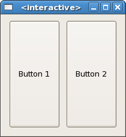

|
GTK2Hs Tutorial |
||
|---|---|---|
When creating an application, you'll want to put more than one widget inside a window. Our first helloworld example only used one widget so we could simply use a set (of the containerChild attribute) or a containerAdd to "pack" the widget into the window. But when you want to put more than one widget into a window, how do you control where that widget is positioned? This is where packing comes in.
Most packing is done by creating boxes. These are invisible widget containers that we can pack our widgets into which come in two forms, a horizontal box, and a vertical box. When packing widgets into a horizontal box, the objects are inserted horizontally from left to right or right to left depending on the call used. In a vertical box, widgets are packed from top to bottom or vice versa. You may use any combination of boxes inside or beside other boxes to create the desired effect.
To create a new horizontal box, we use hBoxNew, and for vertical boxes, vBoxNew. Both take a Bool and an Int parameter. The first will give all children equal space allotments if set True and the second sets the number of pixels to place by default between the children.
The boxPackStart and boxPackEnd functions are used to place objects inside of these containers. The boxPackStart function will start at the top and work its way down in a vbox, and pack left to right in an hbox. boxPackEnd will do the opposite, packing from bottom to top in a vbox, and right to left in an hbox. Using these functions allows us to right justify or left justify our widgets and may be mixed in any way to achieve the desired effect. We will use boxPackStart in most of our examples. An object may be another container or a widget. In fact, many widgets are actually containers themselves, including the button, but we usually only use a label inside a button.

import Graphics.UI.Gtk
main :: IO ()
main = do
initGUI
window <- windowNew
hbox <- hBoxNew True 10
button1 <- buttonNewWithLabel "Button 1"
button2 <- buttonNewWithLabel "Button 2"
set window [windowDefaultWidth := 200, windowDefaultHeight := 200,
containerBorderWidth := 10, containerChild := hbox ]
boxPackStart hbox button1 PackGrow 0
boxPackStart hbox button2 PackGrow 0
widgetShowAll window
onDestroy window mainQuit
mainGUI
|
By using these calls, GTK knows where you want to place your widgets so it can do automatic resizing and other nifty things. The Packing parameter specifies the way the widgets in the container behave when the window is resized. PackNatural means the widgets will retain their size and stay where they are, PackGrow means they will be resized, and using PackRepel the widgets will be padded equally on both sides. The last parameter is an Int, which specifies any extra padding to be put between this child and its neighbours.
Note that the packing only applies to the dimension of the box. If, for example, you specify PackNatural instead of Packgrow in the above, resizing horizontally will keep the buttons at their original size, but resizing vertically will also resize the buttons. This is because the buttons are placed homogoneously in the horizontal box (first parameter True) and the box itself will resize with the window. The next example will make the effects more clear.
|
Getting Started |
|
Packing Demonstration Program |